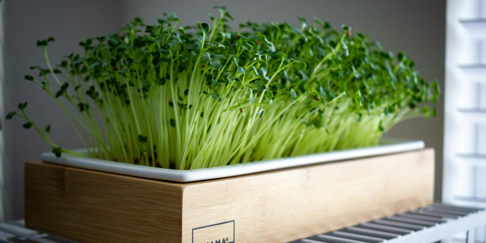

Grow Your First Tray of Microgreens
This post may contain affiliate links. As an Amazon Associate I earn from qualifying purchases.
If you have been growing lettuce in a mason jar, microgreens are a natural next step. You need one shallow tray, a little growing medium, and seeds, and many varieties are ready to cut in about one to three weeks. Here is the simple method I follow, based on guidance from UF/IFAS and N.C. Cooperative Extension.
What you need
- A clean, shallow tray, about 2 to 3½ inches deep, ideally with drainage holes
- A second solid tray to set it in, for watering from below
- Coco coir or a fine seed-starting mix, moistened before you start
- Seeds sold for microgreens (radish, broccoli, or mustard are good first picks)
- A spray bottle, a cover (another tray or a lid), and clean scissors
My picks are on the gear list.
Step 1: Fill and level the tray
Spread about ½ to 1 inch of moistened medium in the tray and gently level it. Press it lightly so the surface is flat but not packed hard.
Step 2: Sow thickly and evenly
Microgreens are sown much more densely than garden crops. UF/IFAS suggests a rule of thumb of about 10 to 12 seeds per square inch for small seeds and 6 to 8 for large seeds. Sprinkle evenly, then press the seeds gently into the surface. Larger seeds such as peas and sunflowers do better after a soak first; UF/IFAS lists about 8 to 12 hours for peas and about 8 hours for sunflower.
Step 3: Mist and cover
Mist the seeds, then cover the tray to keep them dark and moist. UF/IFAS suggests keeping trays covered in a dark place for about 4 to 5 days, or until they germinate, misting about twice a day.
Step 4: Give them light
Once leaves appear, remove the cover and move the tray to a bright south-facing window, turning it each day so the greens grow evenly. If your window is not bright enough, an LED shop light works well. See grow lights on a budget.
Step 5: Water from below
After germination, N.C. Cooperative Extension recommends watering from below rather than over the top, since wet leaves can encourage disease. Pour a little water into the solid tray underneath and let the medium soak it up.
Step 6: Harvest
Most microgreens are ready when the first true leaves show and the plants are about 1½ to 2½ inches tall. Cut just above the soil line with clean scissors. Only eat the stems and leaves, not the roots. UF/IFAS notes they generally keep about 5 to 6 days in the fridge in a container with air holes.
Keep it clean
Start with a clean tray, wash your hands, and use seed sold for microgreens or sprouting. When you are done, the leftover medium and roots can go in the compost.
Next, pick your seeds: the easiest microgreens for beginners.